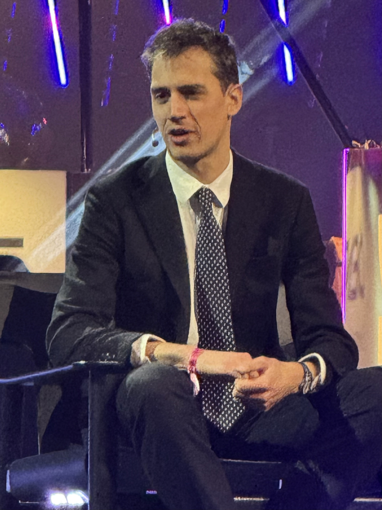

תעודת זהות
חברה מייצגת: Mistral AI
תפקיד מרכזי: מנכ״ל ומייסד־שותף
תחום: מודלי שפה, AI אירופי, מודלים פתוחים ויעילים
European AI Leader

מייסד־שותף ומנכ״ל Mistral AI, ודמות מרכזית בעלייתה של אירופה כשחקנית משמעותית בתחום מודלי השפה.
חברה מייצגת: Mistral AI
תפקיד מרכזי: מנכ״ל ומייסד־שותף
תחום: מודלי שפה, AI אירופי, מודלים פתוחים ויעילים
מנש מייצג את הדור האירופי החדש של מייסדי AI שמנסה לבנות חלופה חזקה, פתוחה ותחרותית לחברות האמריקאיות הגדולות.